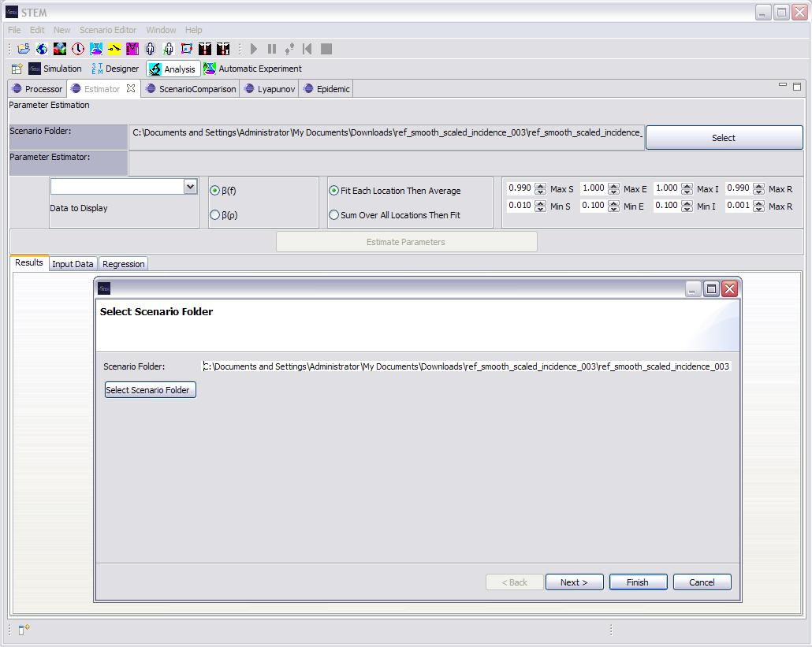
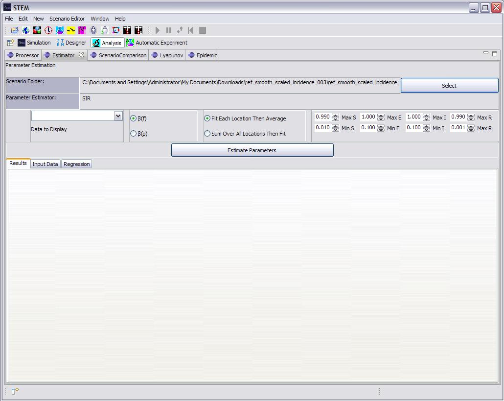
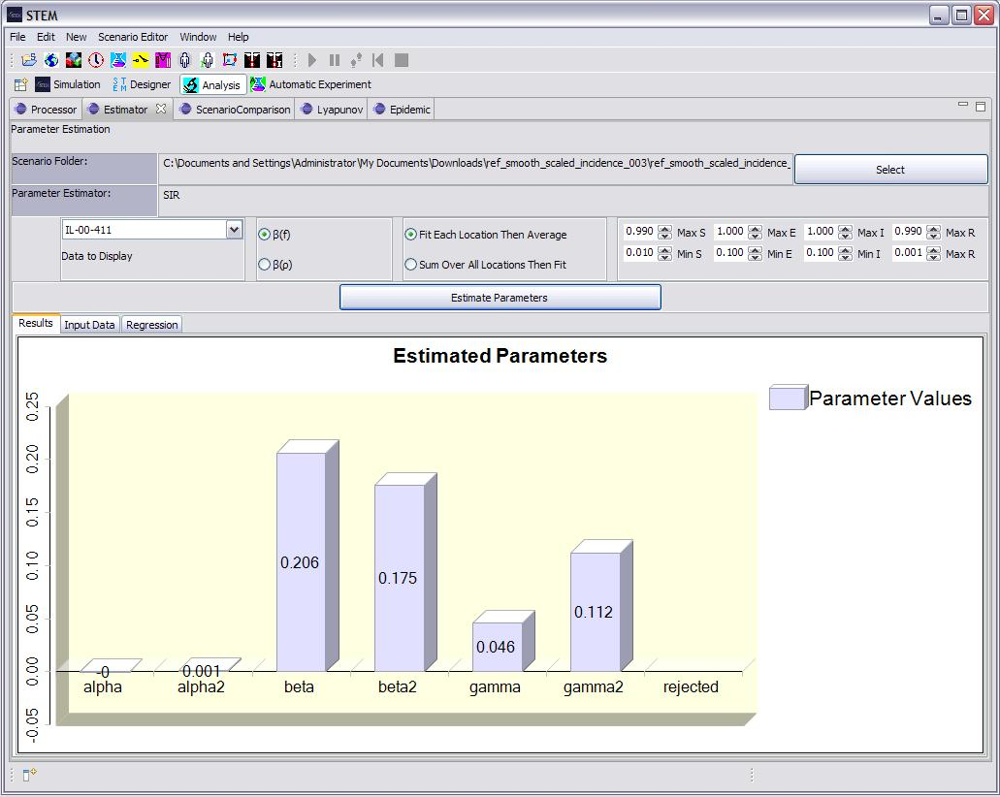

Model Parameter Estimation
This view allows a user to estimate parameter for a (new) model based on existing data. Algorithms are now complete for parameter Estimation using SI, SIR, and SEIR models.
5. A second dialog will launch allowing you to chose from valid models
appropriate to the data set you chose. If, for example, the data
contains columns for all S,E,I,R states, then any SEIR parameter estimator will
appear on the list. Select and Estimator and click "Finish"
6. The Folder you chose will now show up on the "Scenario Folder" text field. Click "Estimate Parameters".

7. A bar chart graph will appear showing you estimates for the appropriate
model parameters. In some case two bars will appear for each parameter as the
estimator may
determine the best estimate fits within a range of values. For more information
on the estimation algorithms please see the
Eclipse STEM wiki.
